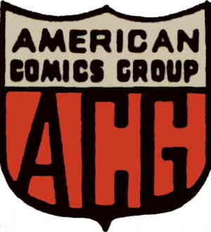

American Comics Group (ACG) was an American comic book publisher started in 1939 and existing under the ACG name form 1943 to 1967. It published the medium's first ongoing horror-comics title, Adventures into the Unknown. ACG's best-known character was the 1960s satirical-humor hero Herbie Popnecker, who starred for a time in Forbidden Worlds. Herbie would later get his own title and be turned into a "superhero" called the Fat Fury.
Founded by Benjamin W. Sangor, ACG was co-owned by Fred Iger from 1948 to 1967. Iger's father-in-law, Harry Donenfeld, head of National Periodical Publications (later known as DC Comics), was also a co-owner in the early 1960s (though Donenfeld was severely incapacitated and out of the business after an accident in 1962). ACG was distributed by Independent News Company, which also distributed by (and was part of the same company as) DC.
Adventures into the Unknown (174 issues, Fall 1948 – Aug. 1967)
Blazing West (20 issues, 1948 – Nov 1951)
Commander Battle and the Atomic Sub" (7 issues, July 1954 – Aug. 1955)
Cookie (55 issues, Apr. 1946 – Sept. 1955)
Dizzy Dames' (6 issues, Sep 1952 – Jul 1953)
Forbidden Worlds (145 issues, July/Aug. 1951 – Aug. 1967)
Funny Films (14 issues, Sep 1949 – May 1954)
“Gasp!’’ (4 issues, Mar. 1967 – Aug. 1967)
Giggle Comics (99 issues, Oct. 1943 – Jan. 1955)
Ha Ha Comics (99 issues, Oct. 1943 – Dec. 1954/Jan. 1955)
Hi Jinks (7 issues, Jul 1947 – Jul 1948)
Herbie (23 issues, Apr./May 1964 – Feb. 1967)
Hooded Horseman (7 issues, Jan 1952 – Jan 1953)
The Kilroys (54 issues, June/July 1947 – June/July 1955)
Lovelorn (114 issues, Aug./Sept. 1949 – June/July 1960)
Magic Agent (3 issues Jan 1962 – May 1962)
Midnight Mystery (7 issues, Jan 1961 – Oct 1961)
Milton Gross Funnies (2 issues, Aug. 1947-Sept. 1947)
Moon Mullins (4 issues, Dec. 1947-Oct. 1948)
Operation Peril (17 issues, Oct. 1950-Apr. 1953)
Out of the Night (17 issues, Feb. 1952-Nov. 1954)
Romantic Adventures (138 issues, Mar./Apr. 1949 – Mar. 1964)
Search For Love" (2 issues, Feb.-Apr. 1950)
Skeleton Hand (6 Issues, Sept.-Oct. 1952-Jul.-Aug. 1953)
Spencer Spook (2 issues, Mar.-May 1955)
Soldiers of Fortune (12 issues, Mar./Apr. 1951 – Jan./Feb. 1953)
Spy and Counterspy (2 issues, Aug.-Oct. 1949
Spy Hunters (22 issues, Dec. 1949-June 1953)
Teepee Tim(3 issues, Feb.-June 1955)
Unknown Worlds (57 issues, Aug. 1960 – Aug. 1967)
Wrangler Great Moments in Rodeo (50 issues, 1955 – 1966)
Young Heroes (3 issues, Feb–Jun. 1955)
Chuckle
Hi-Jinx
Merry-Go-Round
Sheriff of Coshise
The Clutching Hand